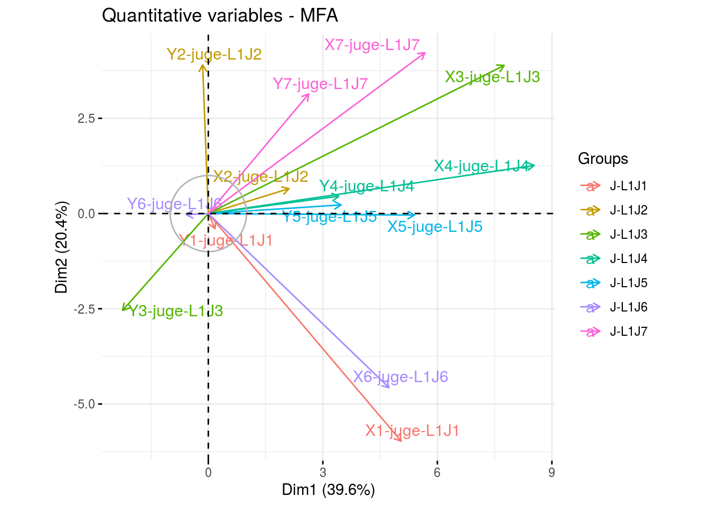

4.4 Napping analysis (M9a)
4.4.1 Method description
The Napping allows you to look for sensory differences between products. Differences are on global sensory characteristics and should be complemented with a verbalisation task to ease the understanding of the differences. It offers greater flexibility, as no trained panel is needed.
Two tasks are done in a Napping:
- The sorting task: each taster is asked to position the whole set of products on a sheet of blank paper (a tablecloth) according to their similarities/dissimilarities. Thus, two products are close if they are perceived as similar or, on the contrary, distant from each other if they are perceived as different. Each taster uses his/her own criteria.
- The verbalisation task: After performing the napping task, the panellists are asked to describe the products by writing one or two sensory descriptors that characterize each group of products on the map.
Panels should be composed from 12 to 25 tasters according to the judge’s experience with the product and to the objective of the experiment. For example ten farmers-bakers should be enough to have reliable results as they are used to eat and taste bread. In case of consumers, a panel of twenty could be more adapted.
No more than ten products should be evaluate simultaneously. A random, three-digit code should be assigned to each sample. Samples are presented simultaneously and the assessors can taste as much as they need. Napping data lead to a quantitative table. The rows are the products. This table presents the number of panellists (\(i\)) sets (one set for each panellist) of two columns corresponding to the horizontal and vertical coordinate (\(X\), \(Y\)). Two columns correspond to each subject (i.e. person that taste) \(j\): the X-coordinate (\(X_j\)) and the Y-coordinate (\(Y_j\)) for each product.
Sensory descriptors are coded through a “products x words” frequency table. First a contingency table counting the number that each descriptor has been used to describe each product is created. Then this contingency table is transformed in frequencies so that the “word frequency” is a qualitative variables with the number of words cited as modalities.
To analyse this kind of data, a Multiple Factor Analysis (MFA) should be performed. Each subject constitute a group of two un-standardised variables. The MFA led to a synthesis of the panellist’s tablecloth. Two products are close if all judges consider them close on the napping. The more the two first components of MFA explain the original variability, the more the judges are in agreement.
The frequency table crossing products and word frequency is considered as a set of supplementary variables: they do not intervene in the axes construction but their correlation with the factors of MFA are calculated and represented as in usual PCA.
4.4.2 Steps with PPBstats
For hedonic analysis, you can follow these steps (Figure 4.2):
- Format the data with
format_data_PPBstats() - Describe the data with
plot() - Run the model with
model_napping() - Check model outputs with graphs to know if you can continue the analysis with
check_model() - Format data for multivariate analysis with
biplot_dataand visualise it withplot()
4.4.3 Format the data
data(data_napping)
head(data_napping)## juges X Y descriptors germplasm location
## 1 L1J1 7.61970 15.2778 peau_epaisse;sansinteret;;; germ-2 loc-4
## 2 L1J1 24.15010 15.4831 agreable;equilibree;parfumee;; germ-8 loc-4
## 3 L1J1 24.38950 15.1427 agreable;equilibree;parfumee;; germ-10 loc-4
## 4 L1J1 7.73941 15.1076 peau_epaisse;sansinteret;;; germ-7 loc-4
## 5 L1J1 24.50820 14.8881 agreable;equilibree;parfumee;; germ-5 loc-4
## 6 L1J1 7.73648 14.8546 peau_epaisse;sansinteret;;; germ-6 loc-4The data frame has the following columns: juges, X, Y, descriptors, germplasm, location. The descriptors must be separated by “;”. Any other column can be added as supplementary variables.
Then, you must format your data with format_data_PPBstats() and type = "data_organo_napping".
Argument threshold can be set in order to keep only descriptors that have been cited several time.
For exemple with threshold = 2, on ly descriptors cited at least twice are kept.
data_napping = format_data_PPBstats(data_napping, type = "data_organo_napping", threshold = 2)## The following descriptors have been remove because there were less or equal to 2 occurences : arôme_tomate, arôme_vegetal, mauvaise, sansjus## data has been formated for PPBstats functions.names(data_napping)## [1] "data" "descriptors"data_napping is a list of three elements :
- data the data formated to run the anova and the multivariate analysis
head(data_napping$data)## germplasm location X1-juge-L1J1 Y1-juge-L1J1 X2-juge-L1J2
## loc-4:germ-2 germ-2 loc-4 7.61970 15.2778 11.37260
## loc-4:germ-8 germ-8 loc-4 24.15010 15.4831 10.89340
## loc-4:germ-10 germ-10 loc-4 24.38950 15.1427 18.53270
## loc-4:germ-7 germ-7 loc-4 7.73941 15.1076 3.82513
## loc-4:germ-5 germ-5 loc-4 24.50820 14.8881 15.39790
## loc-4:germ-6 germ-6 loc-4 7.73648 14.8546 17.55090
## Y2-juge-L1J2 X3-juge-L1J3 Y3-juge-L1J3 X4-juge-L1J4
## loc-4:germ-2 18.94060 26.76360 4.09963 24.80630
## loc-4:germ-8 11.46420 17.34150 8.82138 22.01280
## loc-4:germ-10 3.91870 26.89530 3.75490 24.26340
## loc-4:germ-7 5.53018 6.34316 8.18904 3.61136
## loc-4:germ-5 12.44060 26.89560 3.62606 24.47550
## loc-4:germ-6 17.54730 10.59180 7.70753 4.11214
## Y4-juge-L1J4 X5-juge-L1J5 Y5-juge-L1J5 X6-juge-L1J6
## loc-4:germ-2 16.02890 20.16100 15.64430 11.01970
## loc-4:germ-8 8.93096 8.49433 13.38500 22.13920
## loc-4:germ-10 13.48410 18.43640 14.65120 24.61340
## loc-4:germ-7 3.97247 8.19899 7.59655 4.24403
## loc-4:germ-5 13.29670 24.14130 17.18980 11.27140
## loc-4:germ-6 4.01245 4.04596 2.31195 3.97323
## Y6-juge-L1J6 X7-juge-L1J7 Y7-juge-L1J7 acide acidulee
## loc-4:germ-2 8.67583 27.3515 18.71840 0 0.000
## loc-4:germ-8 15.23870 11.9787 8.51911 0 0.125
## loc-4:germ-10 6.72938 24.9678 17.57220 0 0.125
## loc-4:germ-7 14.28710 16.7013 14.81300 0 0.125
## loc-4:germ-5 9.42970 25.7311 15.94830 0 0.000
## loc-4:germ-6 7.97040 11.8953 9.95286 0 0.125
## agreable aqueuse aromatique douce equilibree fade
## loc-4:germ-2 0.00 0.0000000 0.3 0.000 0.0000000 0.00000000
## loc-4:germ-8 0.25 0.6666667 0.0 0.125 0.3333333 0.07692308
## loc-4:germ-10 0.25 0.0000000 0.2 0.250 0.1666667 0.00000000
## loc-4:germ-7 0.00 0.0000000 0.1 0.250 0.0000000 0.23076923
## loc-4:germ-5 0.25 0.0000000 0.2 0.125 0.3333333 0.07692308
## loc-4:germ-6 0.00 0.3333333 0.1 0.125 0.0000000 0.15384615
## farineuse fibreuse fondante fruitee gouteuse juteuse
## loc-4:germ-2 0.0000000 0.0000000 0.18181818 0.0000000 0.25000000 0.250
## loc-4:germ-8 0.0000000 0.0000000 0.27272727 0.3333333 0.00000000 0.125
## loc-4:germ-10 0.1428571 0.0000000 0.09090909 0.0000000 0.25000000 0.125
## loc-4:germ-7 0.2857143 0.6666667 0.00000000 0.3333333 0.08333333 0.000
## loc-4:germ-5 0.0000000 0.0000000 0.09090909 0.3333333 0.25000000 0.250
## loc-4:germ-6 0.1428571 0.3333333 0.00000000 0.0000000 0.00000000 0.125
## parfumee peau_epaisse raffraichissante sansinteret
## loc-4:germ-2 0.00 0.11764706 0.3333333 0.1666667
## loc-4:germ-8 0.25 0.11764706 0.0000000 0.0000000
## loc-4:germ-10 0.25 0.05882353 0.3333333 0.0000000
## loc-4:germ-7 0.00 0.05882353 0.0000000 0.3333333
## loc-4:germ-5 0.25 0.11764706 0.3333333 0.0000000
## loc-4:germ-6 0.00 0.23529412 0.0000000 0.1666667
## sucree sample
## loc-4:germ-2 0.23529412 loc-4:germ-2
## loc-4:germ-8 0.05882353 loc-4:germ-8
## loc-4:germ-10 0.23529412 loc-4:germ-10
## loc-4:germ-7 0.11764706 loc-4:germ-7
## loc-4:germ-5 0.23529412 loc-4:germ-5
## loc-4:germ-6 0.00000000 loc-4:germ-6descriptorsthe vector of descriptors cited knowing the threhold applyed when formated the data.
data_napping$descriptors## [1] "acide" "acidulee" "agreable"
## [4] "aqueuse" "aromatique" "douce"
## [7] "equilibree" "fade" "farineuse"
## [10] "fibreuse" "fondante" "fruitee"
## [13] "gouteuse" "juteuse" "parfumee"
## [16] "peau_epaisse" "raffraichissante" "sansinteret"
## [19] "sucree"4.4.4 Describe the data
First, you can describe the data regarding the descriptors for each germplasm for example.
descriptors = data_napping$descriptors
p_des = plot(data_napping, plot_type = "radar", vec_variables = descriptors, in_col = "sample") # in_col = germplasm or location
p_des## $`all-variables`4.4.5 Run the model
To run the model on the dataset, used the function model_napping.
out_napping = model_napping(data_napping)out_napping is a list with the MFA object coming from FactoMineR::MFA and the data.
4.4.6 Check and visualize model outputs
The tests to check the model are explained in section 3.1.2.1.2.
4.4.6.1 Check the model
out_check_napping = check_model(out_napping)out_check_nappingis the same objet as out_napping
4.4.6.2 Visualize outputs
Once the computation is done, you can visualize the results with plot
p_out_check_napping = plot(out_check_napping)p_out_check_napping is a plot representing the variance caught by each dimension of the MFA
p_out_check_napping4.4.7 Get and visualize biplot
The biplot represents information about the percentages of total variation explained by the two axes. It has to be linked to the total variation caught by the interaction. If the total variation is small, then the biplot is useless. If the total variation is high enought, then the biplot is useful if the two first dimension represented catch enought variation (the more the better).
4.4.7.1 Get biplot
out_biplot_napping = biplot_data(out_check_napping)4.4.7.2 Visualize biplot
out_biplot_napping is the same objet as out_check_napping
p_out_biplot_napping = plot(out_biplot_napping)p_out_biplot_napping is a list of three elements:
- partial_axes
p_out_biplot_napping$var - ind
p_out_biplot_napping$ind_germplasm- var
p_out_biplot_napping$ind_location